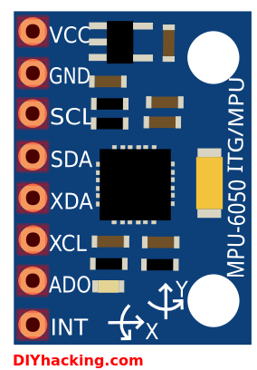
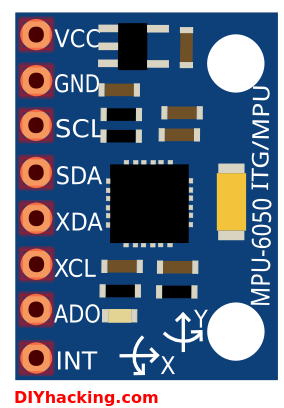

Electrical
The main electrical components of our project can be defined as the LEDs of the front and side panels, tilt sensor, and analog circuit. We used an Arduino Uno as our project’s microcontroller. Our team designed the interfaces between electrical systems and the interfaces between the electrical and mechanical components to be sturdy enough for repeated demos as well as simple enough to attach and detach easily for moving and storage.
Because the LED matrix of the front screen would be the primary element of the game showing approaching walls and gaps that the user would have to navigate through, we focused time and resources into making it high resolution, and ended up with an 8 x 16 matrix. We elected to go with RBG LEDs as they would provide more potential for feedback to the user. Interactions like blinking red when we hit a wall or changing wall colors for each level would provide a more immersive playing experience as the surroundings are vibrantly reacting to the player inputs.
Each RGB LED required four pins to function. We implemented a shift register to reduce the number of pins used on the Arduino Uno in order to eliminate the need for stacking 7 additional I/O shields onto our Arduino. The circuit schematic is shown below.

The shift register circuit is currently implemented on a solderless breadboard, but we hope to move to a soldered protoboard for increased robustness.
The LEDs are rated to run at a current of 20mA from a 5V power supply, so we calculated the value of the required resistors using Ohm’s Law:
V = iR
R = V/i
R = 5 V/0.02 A
R = 250 ohm
We ended up using 200 ohm resistors rather than 250 ohm resistors for convenience.
The LEDs are soldered together in columns, with each LED in the strip connected to the one below it. Since all the LEDs in each column will be uniform color and light intensity, the inputs for the RGB values are fed to all LEDs in series while power is fed in parallel such that each LED and resistor combination is linked to the same 5V power line. This scheme allows us to keep the wiring relatively simple, and avoid using huge lengths of wire.
In order to increase the robustness of the system and avoid breaking or shorting joints, we glued each LED pin down to a panel. We grouped wires by LED strip, and tied two knots in them to provide stress relief for the soldered joints. We braided each set of wires together using a hand drill in order to keep things tidy.
Thus as the base of each LED column, there are wires for red, green, blue, and power. The RGB wires are then hooked up to Q0 to Q7 pins in the 74HC595 shift register while power was routed to the power line on the breadboard. Due to the configuration of the shift register, we can fit 2 columns per shift register or 8 columns per 3 shift registers. This worked out nicely for our 16 column front panel.
 

For collecting data from the user, we used the InvenSense MPU-6050 which is a three axis gyroscope and 3 axis accelerometer or “6 degrees of freedom inertial measurement unit” (6DOF IMU). This provides us with yaw, pitch, and roll, more than enough as we are just interested in rotation about 1 axis for our game. Due to the orientation of the circuit, we are interested in pitch. There are three wires from the Arduino to the IMU, the first is from INT to digital on the Arduino which parses data, and two from SCL and SDA to analog input on the Arduino which carries the measured rotation and acceleration.
Thus, data is taken from the player’s positioning on the chair using an IMU, processed by an Arduino, and then sent to a shift register circuit on a breadboard to control the 8 x 16 LED matrix on the front panel.